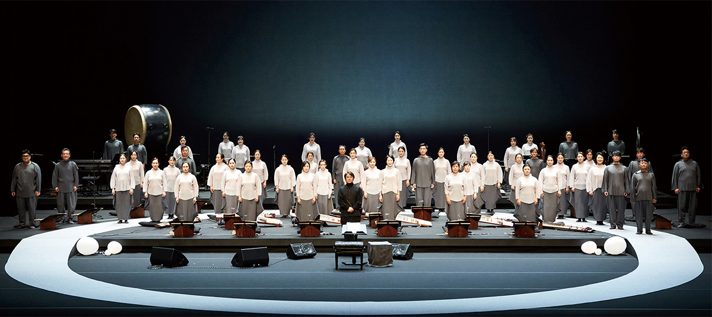
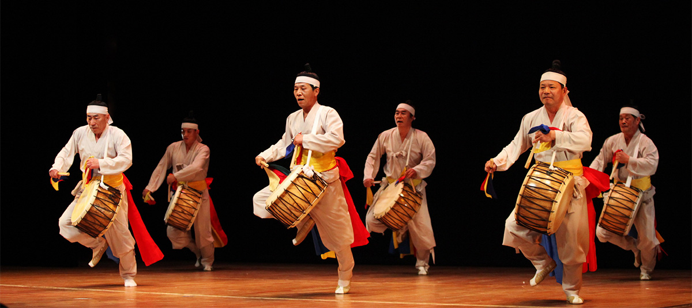
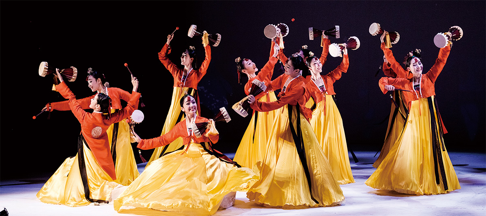

home > 재단소개 > 상주예술단체
상주예술단체
여성합창단

- bupyeong women’s choir
부평구립 여성합창단 - 단체소개
- 부평구립여성합창단은 인천광역시 부평구 거주 여성들로 구성된 순수 아마추어 합창단이다. 2000년에 창단하여 그 해 인천합창제 대상을 시작으로 여러 전국합창대회에서 수상하며 기량을 인정받았다. 아름답고 세련미 넘치는 통일된 음색과 신비로운 화성감을 자랑하며 전국 최고 수준의 아마추어합창단이라는 평을 받고 있으며 국내외 대회 및 행사는 물론 지하철, 병원, 학교 등 찾아가는 공연을 통해 활발하고 다양한 활동을 선보이며 부평구의 대표 문화사절단으로 활동 중이다.
- 수상내역
- 2017.09.22. 제14회 거제전국합창경연대회 동상
- 2017.09.09. 제1회 보령머드전국합창경연대회 동상
- 2015.12.18. 인천광역시 자원봉사의 날 페스티벌 대상
- 2015.12.01 제4회 유관순 음악제 전국유관순합창경연대회 유관순상 대상
- 2013.08.28. 태백 전국합창경연대회 장려상
- 2011.06.30. 제3회 구미 전국새마을합창제 동상
- 2009.07.15. 2009제주국제합창제 장려상
- 2008.07.15. 2008 제주국제합창제 장려상
- 2007.08.13. 제25회 태백 전국합창경연대회 동상
- 2007.06.27. 광주전국여성합창경연대회 은상, 최고 지휘자상
- 2007.05.22. 제4회 휘센 합창페스티벌 전국 결선 동상
- 2000.10.04. 인천여성합창대회 대상
풍물단

- bupyeong pung-mul
부평구립 풍물단 - 단체소개
- 부평구립풍물단은 2007년 1월, 부평을 대표하는 풍물단체로 창단하여 서울, 경기, 인천 등 수도권 지역의 초청공연, 인천부평풍물대축제 메인 공연, 부평구 지역문화행사 등 풍물을 통한 다양한 활동을 펼치고 있다. 또한 매년 전국경연대회에서 우수한 성적으로 수상하며 부평 구문화사절단으로서 풍물도시 부평을 전국에 알리고 있다.
- 수상내역
- 2017.09.17. 제17회 전국웃다리농악경연대회 일반부 금상
- 2017.06.03. 제3회 계양산 국악제 풍물부문 우수상
- 2017.05.21. 제19회 전국농악명인경연대회 일반부 대상
- 2016.11.10. 제8회 원주 전국풍물경연대회 금상
- 2016.08.28. 제4회 전국충청웃다리경연대회 장원
- 2013.04.12. 제2회 당진시장기 전국농악대회 장원
- 2013.04.21. 제1회 전국 충청웃다리농악 경연대회 차상
- 2009.06.14. 제8회 수원화성주부국악제 전국대회 타악부문 장관상
- 2008.06.15. 제7회 수원화성주부국악제 전국대회 타악부문 버금상
- 2007.10.05. 제11회 충남도지사기 전국주부풍물경연대회 참방상
무용단

- bupyeong korean dance
부평구립 무용단 - 단체소개
- 부평구립무용단은 우리 춤의 발전과, 부평구민의 문화예술을 제고하기 위해 2010년에 창단된 부평구 대표 예술단체입니다. 특유의 맑고 아름다운 무용으로 국내외 여러 무용대회에서 대상을 차지하며 그 실력을 인정받았고 수많은 각종 행사에서 성공적인 무용을 선보였다. 매년 다양한 공익 행사에서 인천 무용단 대표로 참여하여 많은 활동을 선보이고 있다.
- 수상내역
- 2019.10.05. 2019 대교 무용코리아 대상
- 2019.06.08. 제3회 전국무용대회 금상
- 2017.05.13. 제1회 전국무용경연대회 장려상
- 2015.09.18. 2015 대교 무용코리아 대상
- 2013.06.17. 2013 여수세계무용제 동상
- 2012.10.26. 2012 대교 무용코리아 은상
- 2012.05.04. 제1회 무용대회 출전, 최우수상
- 2011.01.17. 한국무용컨벤션 대상